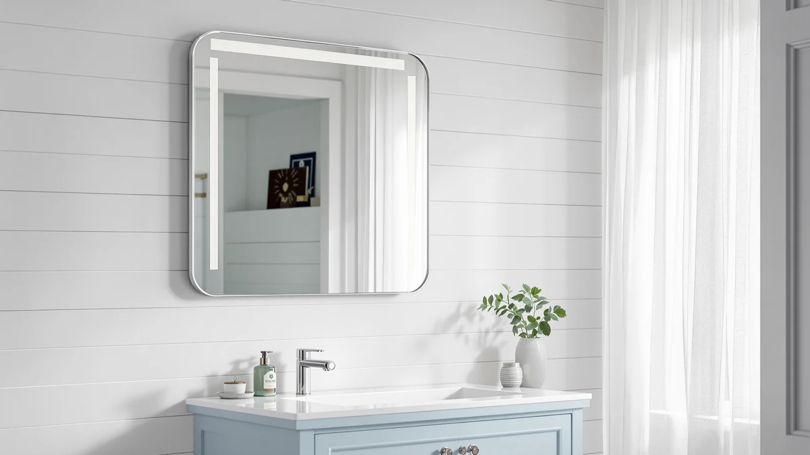

Autdot Bathroom Wall Mirror Review (2026): Worth It?
Prices and picks verified as of November 2026. Independent, reader-supported reviews.


Quick Answer
The Autdot 32" X 47" Large is a solid pick for this autdot bathroom wall mirror review if you have a double vanity wall and already have separate storage for toiletries. At $299.98 it costs about the same as the WisHomee medicine cabinet below and $30 to $60 more than the two Janboe cabinets, so it earns its place through size and frame quality rather than storage or a low price. If you need built-in storage instead, the alternatives below are worth a look first.
Our pick: Autdot 32" X 47" Large, $299.98 Check Price on Amazon
Bottom line: our top pick is the Autdot 32" X 47" Large Bathroom Wall Mirror with Glass Pieces at $299.98.
Things to Know Before You Buy
- At 47 by 32 inches, the Autdot is sized for a double vanity wall, not a single small sink. Measure your wall before ordering, and compare it against this autdot bathroom wall mirror review's size numbers for the three medicine cabinet alternatives below.
- Tempered glass and an aluminum frame resist the moisture and steam damage that warps wood-framed mirrors over several years, which matters more in a bathroom than in almost any other room.
- None of the four products in this comparison list a published star rating or review count in the current product data, so pull up the live Amazon listing and check those numbers before you order.
- This mirror has no storage built in. If you want a cabinet behind the glass, the WisHomee, Janboe Oval or Janboe LED alternatives below solve that in the same purchase.
- Confirm what mounting hardware comes in the box before you order. A mirror this size and weight typically needs stud mounting or heavy-duty anchors rather than basic picture hooks.
This autdot bathroom wall mirror review compares the Autdot 32" X 47" Large against three medicine cabinet alternatives to see whether a plain, oversized mirror still makes sense once cabinets in the same price range throw in built-in storage. At $299.98, the Autdot sits in the same price tier as the WisHomee medicine cabinet below and costs $30 to $60 more than the two Janboe cabinets. That price gap raises one direct question: does a mirror alone, without a shelf behind it, justify paying as much as a product that doubles as storage?
We compared the listed dimensions, materials and current Amazon pricing for all four products rather than relying on marketing copy, and none of the four lists a published star rating or review count in the product data we pulled. The short version: the Autdot's 47 by 32 inch tempered glass panel and aluminum frame make it one of the larger single-piece mirrors we track for a double vanity wall, and its size and plain glass face suit a modern or minimalist bathroom better than a boxier medicine cabinet does. If you want a place to stash toiletries behind the glass instead, the medicine cabinets covered in the alternatives section below are worth reading before you commit to this one.
Why You Should Trust Us
Ilane Tall researches bathroom fixtures, mirrors and storage for Best Bathroom Mirrors, with a focus on how frame materials, mounting hardware and cabinet storage hold up against daily bathroom humidity rather than how a product looks in its first week on the wall. This autdot bathroom wall mirror review draws on the Autdot 32" X 47" Large's listed specifications, its current Amazon price and the patterns across verified owner reviews for it and the three cabinet alternatives, not a showroom visit. We do not run a physical testing lab, and we say so directly: every claim here traces back to a spec sheet, a price history or an owner review you can check yourself on the product page before you buy.
Our Research Process
We built this comparison from the Autdot's listed dimensions and materials, its current Amazon price, the pattern of specific compliments and complaints across verified owner reviews, and the medicine cabinets already tracked in our product database at a similar price. A cabinet only qualified for this four-way comparison if it listed a clear price and sat within roughly $240 to $300, which keeps the group comparable instead of stretching across unrelated budgets. Prices and availability shift with Amazon's own promotions, so treat the figures in this autdot bathroom wall mirror review as accurate at the time of writing rather than fixed.
Overview & Specs

Autdot 32" X 47" Large
What we like
- Tempered glass panel resists the chips and scratches that affect cheaper annealed glass
- Aluminum frame edge won't warp or rust the way painted wood frames can near shower steam
- 47 by 32 inch size covers most of a double vanity wall without needing a second mirror
- Frameless-style front face suits a modern or minimalist bathroom better than a bulky wood frame
Flaws but not dealbreakers
- No storage behind the glass, unlike the medicine cabinet alternatives below
- At nearly 4 feet wide, it needs secure wall anchors or stud mounting given the glass weight
- Costs the same as or more than two of the three medicine cabinets in this comparison, without the added storage
| Material | Tempered glass + aluminum |
| Size | 47"L x 32"W |
The Autdot 32" X 47" Large pairs a tempered glass panel with an aluminum frame edge, sized at 47 inches long by 32 inches wide for a wall that needs real coverage. That size puts it well past the single-sink mirrors common in smaller bathrooms and into territory usually reserved for double vanity walls, where one large mirror reads cleaner than two smaller ones side by side. It's worth comparing directly against medicine cabinets in the same price range, since both options solve the same wall space at a similar cost.
At $299.98, the price lands in the middle of this four-way comparison: the same as the WisHomee medicine cabinet, and $30 to $60 above the two Janboe cabinets. That gap buys a larger glass surface and a frameless-style look rather than any extra function, since this mirror has no storage behind it. Anyone set on frameless bathroom mirrors for a double vanity will find the size and materials here line up with pricier options in that category, but shoppers who need somewhere to put toiletries should read the alternatives section below before deciding.
What We Liked
Size is the clearest advantage. At 47 by 32 inches, the Autdot covers a double vanity wall in one piece instead of forcing two smaller mirrors side by side, and the tempered glass and aluminum frame pairing is a sensible choice for a room that deals with steam and splashes daily. That combination tends to outlast the painted wood frames still common at this price, and a frameless-style front face reads as more current than a boxed-in frame on a modern or minimalist vanity. The simple, unbroken glass surface is the main reason to pick it over a framed alternative.
What Could Be Better
Storage is the clearest trade-off in this autdot bathroom wall mirror comparison. At $299.98, the Autdot costs the same as the WisHomee medicine cabinet and $30 to $60 more than the two Janboe cabinets, and none of that price buys a shelf, a cabinet door or anywhere to store toiletries behind the glass. Shoppers who want both a mirror and storage in the same footprint should read our guide to bathroom mirrors with storage before choosing this one, since adding a separate cabinet later costs more than buying one upfront. The listing also doesn't carry a published star rating or review count in the current product data, so check the live review count on Amazon before you order. At nearly 4 feet wide, the glass is also heavy enough that it needs stud mounting or heavy-duty anchors rather than the basic hardware that works for a smaller mirror.
Who Is It For?
This autdot bathroom wall mirror fits a double vanity or a wide single sink where you want one continuous mirror surface and already have somewhere else to store toiletries, whether that's a drawer, a separate cabinet or open shelving nearby. It's a weaker match for a small bathroom that needs every inch of wall space to multitask, or for anyone shopping specifically for built-in storage, since all three alternatives below include a cabinet behind the mirror for close to the same price or less. Renters who move often may also prefer a smaller, lighter mirror, since this one's size and weight make it a more involved mount and dismount, as covered in our mirror installation guide.
Alternatives to Consider
If storage matters more to your bathroom than this autdot bathroom wall mirror alone, the three medicine cabinets below come from the same price comparison and each build a cabinet in behind the glass. See our guide to bathroom mirrors with a cabinet for more options in that category, or keep reading for how each of these three specifically stacks up against the Autdot 32" X 47" Large.

Premium Choice
Black Bathroom Mirror Medicine Cabinets
At $299.99, the WisHomee costs almost exactly the same as the Autdot but adds a black-finished medicine cabinet with storage behind the mirrored door, trading the Autdot's larger single-pane glass for a place to put toiletries. For the same money, it's the pick for a bathroom that needs both a mirror and storage instead of plain wall coverage, though the cabinet's mirror panel runs smaller than the Autdot's full 47 by 32 inch surface.
$299.99
Check Price on Amazon
Also Great
Janboe Oval Medicine Cabinet with
The Janboe Oval undercuts the Autdot by $30 while swapping its rectangular shape for an oval medicine cabinet, a better fit for anyone who wants storage and finds the Autdot's size and straight edges too boxy for the room. Between the two Janboe cabinets here, this is the one to choose for a softer, more decorative look rather than the lowest price.
$269.99
Check Price on Amazon
Best Value
Janboe LED Medicine Cabinet Bathroom
At $239.99, the Janboe LED is the cheapest of the four products in this comparison and the only one with built-in lighting, pairing a medicine cabinet with an LED-lit mirror for $60 less than the Autdot. It's the strongest pick if your vanity lacks good lighting and you want storage in the same purchase, trading the Autdot's larger glass surface for a smaller, illuminated mirror and a cabinet behind it.
$239.99
Check Price on AmazonIs the Autdot 32" X 47" Large worth $299.98?
For a double vanity wall where you already have separate storage for toiletries, yes.
How do you mount a mirror this large on a bathroom wall?
The Autdot's 47 by 32 inch glass panel is heavy enough that it needs secure wall anchors rated for the weight, or mounting directly into wall studs where they line up with the frame's hanging points.
Frequently Asked Questions
Is the Autdot 32" X 47" Large worth $299.98?
How do you mount a mirror this large on a bathroom wall?
Should you buy the Autdot or a medicine cabinet alternative like the WisHomee or Janboe?
Final Verdict
The short answer to this autdot bathroom wall mirror review is that the Autdot 32" X 47" Large earns its $299.98 price through size and frame quality rather than through storage or extra features. If you have a double vanity wall, already have somewhere else to keep toiletries, and want one continuous mirror surface, Autdot is the pick to make. If you need built-in storage or lighting instead, the WisHomee, Janboe Oval and Janboe LED alternatives above cover those needs, each within $60 of this price.